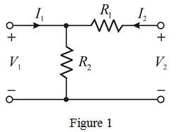
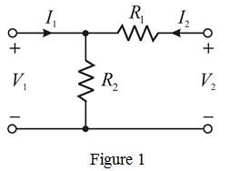
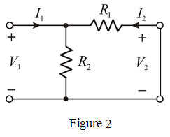
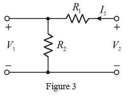
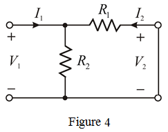
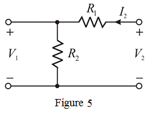
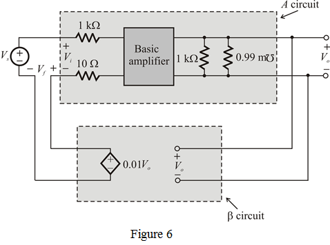

(a)
Refer to the circuit diagram in Figure P10.34 in the textbook.
The expressions used to find the h parameters are:
Here,

Redraw the figure.

(a)
Refer to the circuit diagram in Figure P10.34 in the textbook.
The expressions used to find the h parameters are:
Here,
Redraw the figure.

Short circuit port 2 leads to voltage as shown in Figure 2.

From Figure 2,
Define parameter  .
.
Thus, hybrid parameter is .
Open circuit port 1 leads to current as shown in Figure 3

The voltage across the resistor  is
is  .
.
Use voltage division rule:
Define parameter .
.
So,
Thus, hybrid parameter  is.
is.

Then the voltage across the resistor  is same as the voltage across the resistor
is same as the voltage across the resistor  which is equal to
which is equal to 
In this case,

That implies,
Hence,
Define parameter
Thus, hybrid parameter is.
Open circuit port 1 leads to current as shown in Figure 5

Apply Kirchhoff’s Voltage Law to the right side loop.
Define parameter
Hence,
(b)
Consider the following data:
For a series-shunt feedback amplifier,
Recall parameter expression.
Substitute for  .
.
That implies,

Recall parameter expression.
Thus, parameter  is .
is .
Recall parameter  expression.
expression.
Thus, parameter is .
Recall parameter  expression.
expression.
Hence, parameter is  .
.
Recall parameter expression.
Hence, parameter is .
(c)
The Source resistance is, The Load resistance is,
The required equivalent circuit is shown in Figure 6.

Thus, equivalent circuit for the Figure P10.34 is has been drawn.